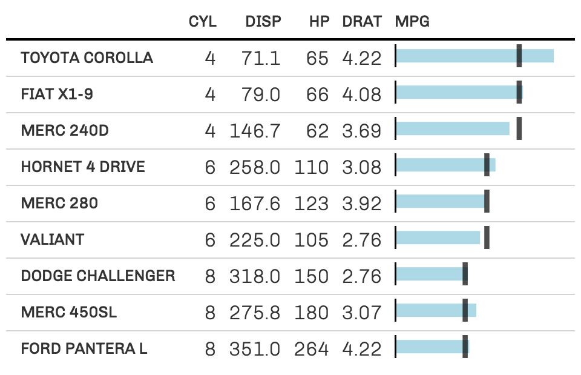

Create an inline 'bullet chart' in a gt table
Usage
gt_plt_bullet(
gt_object,
column = NULL,
target = NULL,
width = 65,
palette = c("grey", "red"),
palette_col = NULL
)Arguments
- gt_object
An existing gt table object of class
gt_tbl- column
The column where a 'bullet chart' will replace the inline values.
- target
The column indicating the target values that will be represented by a vertical line
- width
Width of the plot in pixels
- palette
Color of the bar and target line, defaults to
c("grey", "red"), can use named colors or hex colors. Must be of length two, and the first color will always be used as the bar color.- palette_col
An additional column that contains specific colors for the bar colors themselves. Defaults to NULL which skips this argument.
Examples
set.seed(37)
bullet_tab <- tibble::rownames_to_column(mtcars) %>%
dplyr::select(rowname, cyl:drat, mpg) %>%
dplyr::group_by(cyl) %>%
dplyr::mutate(target_col = mean(mpg)) %>%
dplyr::slice_sample(n = 3) %>%
dplyr::ungroup() %>%
gt::gt() %>%
gt_plt_bullet(column = mpg, target = target_col, width = 45,
palette = c("lightblue", "black")) %>%
gt_theme_538()